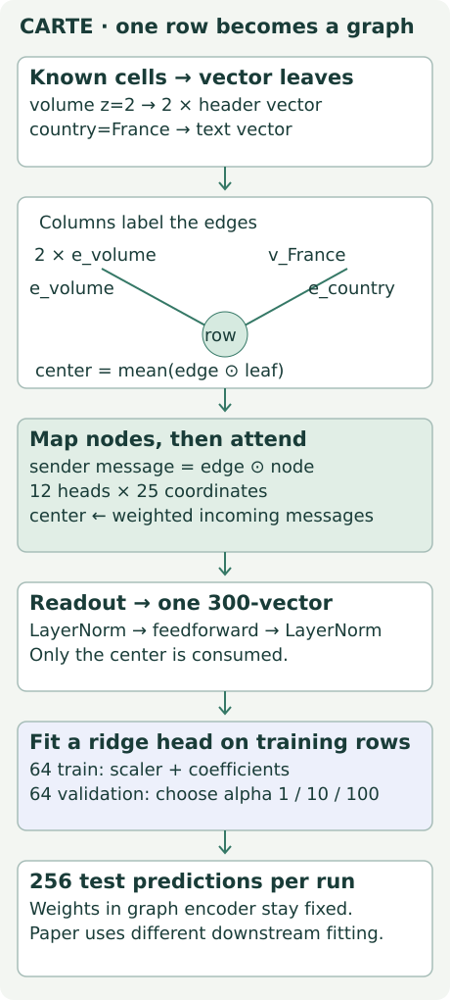
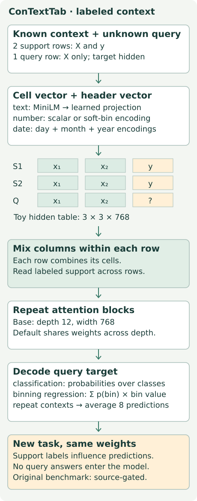
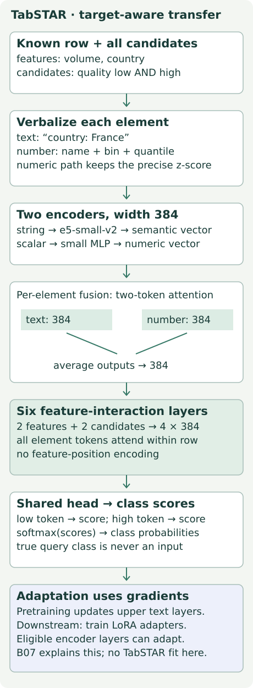
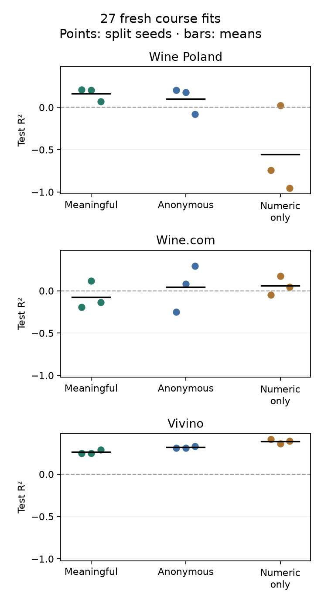

Semantic transfer: when names become inputs¶
B07 · Research bridge · One skill: design a semantic-name ablation that changes information without changing the evaluation population.
Student notebook · Executed solution · Field guide · Reproduction contract
1 · The gap after B06¶
B06 varied the distribution of training tasks while keeping the learner fixed. But a numerical task generator does not automatically teach a model what “country,” “wine,” or “price” means. A column of numbers has statistical structure; a column name can add a clue about what those numbers describe.
Semantic transfer means reusing meaning learned elsewhere when predicting on a new table. Here, names and text values enter a pretrained representation. They can help with little labeled data. They can also be irrelevant, ambiguous, or misleading. Our job is to measure their contribution rather than assume it.
This connects to the mission: before crediting a relational model for using database structure, check whether it simply received useful text that its competitors never saw. A foreign-key relationship and a meaningful column name are different information channels.
Recall before reading. A feature is a known input. A target is the value to predict. An embedding maps an input into a vector of numbers. Pretraining learns reusable parameters before the present task. Fine-tuning changes parameters using the present task's training data. In-context learning changes the labeled examples supplied to a frozen model.
2 · What exactly will we remove?¶
Worked example. A wine row has volume = 2 after numerical scaling and country = France. Its target is price. Renaming the headers to 6 and 7 preserves every cell value. Removing the country column changes which facts are available. Those are different interventions.
| Arm | Headers | Numeric values | Text and categorical values |
|---|---|---|---|
| Meaningful | Original names | Preserved | Preserved |
| Anonymous | Fixed digit names | Preserved | Preserved |
| Numeric-only | Same digit names | Preserved | Removed |
In plain terms. The first comparison asks what happens when we remove the natural names. The second asks what happens when we also take away text-valued predictors. Neither question asks which architecture is best.
A model can still learn from “France” when its header is anonymous. Digit labels also have embeddings; anonymous does not mean zero information. Our numeric-only arm removes categorical and free-text columns together. It changes both information and graph size, so a score change cannot be attributed solely to a language model's quality.
Predict the center after hiding names
Illustrative 2D vectors. Keep row identity and numeric value 2 fixed.
volume: 2; country: France
center = [1, 0.5]
volume: 2; country: France
The board uses illustrative two-dimensional vectors, not measured FastText vectors. With meaningful names, the numeric leaf is 2 × (1,0) = (2,0). The text leaf is (0,1). CARTE's course center averages elementwise edge–leaf products: ((2,0)+(0,1))/2 = (1,0.5). Changing only the header vectors changes this computation even though the cells stay fixed. Trace both coordinates before moving the control.
3 · Model architecture: CARTE makes one graph per row¶
Recall L074. A row graph has a center representing one row and leaves representing its observed cells. A column-name embedding labels each edge. Text values get language embeddings; a numerical value scales its column vector. No explicit correspondence between different tables' schemas is needed to apply shared parameters.
Follow the operation. The B07 course encoder uses 300-dimensional vectors. Learned initial maps transform nodes and edges. For each edge, its vector multiplies the sending node vector element by element. Twelve attention heads assign weights to incoming messages; each head uses 25 coordinates. The center gathers these weighted messages. Normalization and a small feedforward network produce one 300-dimensional row representation. The visible code identifies receiver and sender indices explicitly.

Adaptation. CARTE transfers graph-pretrained weights and learns a downstream predictor. In this lesson, the encoder stays frozen and we fit a ridge head: a linear predictor whose coefficient penalty is controlled by alpha. Larger alpha shrinks the fit more strongly. Training rows fit the head; validation rows choose alpha; test rows measure the chosen head.
Scope check. B07 reuses L074's exact selected one-readout implementation and YAGO tensors. Strict initial-map loading, no ordinary graph blocks, zero dropout, and a ridge head differ from the full published downstream procedure. This is a complete course experiment, not a new CARTE paper reproduction. See CARTE §§3.1–3.3 and the local contract.
4 · Model architecture: ConTextTab reads labeled context¶
The new step. Instead of fitting a separate target head, ConTextTab receives labeled rows from the new task alongside unlabeled query rows. A support row supplies a known target. A query row supplies features, with its target hidden from the model.
Column headers and text cells use a pretrained text encoder. Projected header vectors are added to cell representations. Numerical and date inputs have their own encoders. For the paper's binning variant, neighboring numerical bins share the representation smoothly; its regression head predicts probabilities over target bins and combines their representative values.
Attention has two jobs. Column attention mixes cells within each row. Row attention lets the model use the labeled context. The query's unknown target must never become an input. In the paper's base configuration, the hidden width is 768 and the model applies 12 alternating attention blocks, with block weights shared across depth in the default configuration.

A small shape trace. Two support rows plus one query, with two features and one target column, give a conceptual 3 rows × 3 columns × 768 hidden table. Column attention combines each row's feature and target tokens. Row attention consults the two support rows. Only the query target position is decoded for our prediction. The diagram's tiny row counts explain information access; they are not the paper benchmark context size.
Bagging averages predictions from several sampled support sets. If two bags give class probabilities 0.2 and 0.8, the mean is 0.5. This spends more inference work and changes the supplied contexts; it does not train two new encoders. The original paper uses eight bags sampled with replacement. See ConTextTab §§3–4.
Scope check. The current SAP model card documents the ConTextTab rename. That does not make every current wrapper option a historical paper setting. B07 archives a concrete drift: the June code samples with replacement; the current wrapper samples without replacement. Original Table 2 remains source-gated.
5 · Model architecture: TabSTAR adapts the representation¶
The unresolved issue. A generic text vector may preserve words that are unhelpful for the current target. “Dry” might help predict a wine style but need a different interpretation when predicting price. TabSTAR introduces target-aware tokens and task training that can adapt its representations.
Verbalize. A semantic feature becomes a short string containing its name and value. A numerical feature has two paths: a standardized number retains precision, while a description of its name, bin and quantile conveys meaning. Standardization subtracts a training mean and divides by a training standard deviation; a quantile identifies a position in the training distribution.
Encode and fuse. The text path uses e5-small-v2. A small numerical network maps the numeric input to the same width. A one-layer, two-token attention block combines the pair for each element, then averages its two output vectors. The resulting element width is 384. Fusion happens within each element before attention across elements.
Introduce target candidates, not the answer. For classification, include every allowed class as a target token for every row: for example, quality: low and quality: high. Both appear whether the actual answer is low or high. For regression, use the target's name without its unknown value. Training labels supply the loss afterward.

Interact and predict. Six transformer layers mix feature and target tokens within the row. The same prediction head scores each candidate target token; softmax turns the scores into probabilities. Sharing the head supports different class counts without a separately sized classifier for each dataset. For two features and two candidate classes, this stage processes 4 × 384 vectors. It does not require support-row attention at prediction time.
Adaptation. During TabSTAR pretraining, the upper text-encoder layers are trainable. Its downstream procedure uses LoRA, low-rank trainable updates to selected weight matrices, while base weights stay frozen. Those learned updates still constitute gradient-based task adaptation. The paper uses rank 32 and adapters across eligible blocks, including eligible text-encoder layers. See TabSTAR §3 and Appendices A.2/B.2.
Audit the update and target contract
Scope check. CARTE, ConTextTab and TabSTAR are an architecture comparison here, not a three-model score contest. Only the selected CARTE course lane is executed. TabSTAR is not forward-only ICL, and context-based prediction is not evidence that a system never used labeled data.
6 · Freeze the experiment before viewing its scores¶
Three existing wine tables each contribute 384 rows. For every split seed, the same 64 rows train every arm, the same 64 choose alpha, and the same 256 evaluate it. We run seeds 0, 1 and 2. The recipe is exactly L074's, not a new favorable split.
Held fixed: pretrained tensors, raw numeric inputs, targets, train-only preprocessing, split identities, ridge candidates [1,10,100], selection rule and test population. Varied: natural header meanings, then text-valued predictors. Measured: test R², RMSE and paired changes. All 27 fits retain their selected head and predictions.
R² compares squared errors with predicting the test-set mean: 1 − sum((prediction−target)²) / sum((target−test_mean)²). The test mean is a scoring reference, not a trained baseline. R² can be negative. RMSE is the square root of mean squared error. It is in the preserved transformed-target units here, not necessarily currency units.
Worked scoring example. Targets [1,3] have mean 2 and denominator 2. Predictions [1,2] have squared error 1. Therefore R² is 1−1/2 = 0.5. Perfect predictions give 1; a negative value means worse squared error than that test-mean reference.
Pair before averaging. Suppose anonymous minus meaningful gives differences [−0.03,+0.01,+0.02] for three matched splits. Their mean is zero, but the splits disagree. Pair by (table, seed); do not pair list positions or quietly drop failed runs. Report the sample standard deviation as split variability, not as a confidence interval.
Reveal the complete author experiment
| Table | Meaningful | Anonymous | Numeric-only |
|---|---|---|---|
| wine_pl | 0.162 ± 0.079 | 0.101 ± 0.160 | -0.557 ± 0.515 |
| wine_dot_com_prices | -0.072 ± 0.167 | 0.043 ± 0.273 | 0.058 ± 0.113 |
| wine_vivino_price | 0.262 ± 0.024 | 0.318 ± 0.012 | 0.388 ± 0.027 |
Mean test R² ± sample SD across three paired split seeds. Full data: independent audit.

Read the mixed outcome. Removing names lowers mean R² by about 0.061 on wine_pl, raises it by 0.114 on wine_dot_com_prices, and raises it by 0.056 on wine_vivino_price. On wine_dot_com_prices, two paired splits decline and one large increase reverses the mean. Do not describe that mean as improvement on every split.
Text removal is also mixed: numeric-only harms wine_pl substantially but improves mean scores on the other two. A small training set, pretrained representation mismatch and nuisance features are possible explanations; this experiment does not identify which explanation is correct.
| Table | Anonymous − meaningful | Numeric-only − anonymous |
|---|---|---|
| wine_pl | -0.061 ± 0.081 | -0.658 ± 0.437 |
| wine_dot_com_prices | +0.114 ± 0.276 | +0.015 ± 0.234 |
| wine_vivino_price | +0.056 ± 0.012 | +0.070 ± 0.028 |
Mean paired R² change ± sample SD; positive favors the left arm.
What was checked. All 6,912 test predictions are present. The independent auditor reconstructs the ridge solution from its linear equations, rechecks validation selection and scores original labels by complete row identity. Corrupted rows, labels, predictions, protocol and run coverage are rejected. The encoder tensors remain fixed. A repeat execution checks repeatability; it does not add independent seeds.
Scope check. These are three related wine tables and a small frozen-encoder probe. The result neither establishes universal semantic benefit nor refutes larger benchmark findings. Reported mean ranks and rank-test diagnostics in the evidence file are exploratory; they cannot turn related tables into independent domains.
7 · Full reproduction: what remains missing?¶
The approved published target is B07-CONTEXTTAB-BAGGING: the binning base model versus without bagging on the complete CARTE subset of ConTextTab v1 Table 2. The paper reports base accuracy 76.0% and R² 71.4%; removing bagging changes each by −0.4 percentage points. These are published reference values, not B07 measurements.
Source gate: INCOMPLETE_SOURCE_PROTOCOL. We have original model/inference code, but have not authenticated the binning-base checkpoint, complete original dataset/split identities, or the benchmark evaluator/settings. The original wrapper defaults to direct regression; the current wrapper defaults to a later checkpoint. Substituting either would change the experiment.
The source preflight authenticates the archive and refuses --run. It is not a complete original benchmark implementation. Fresh original inference, new pretraining and whole-paper reproduction remain NOT_RUN. The protocol includes exact commands, failed attempts, deviations and remaining work. Budget: $10 total, $8 commitment stop plus $2 reserve; 3,600 aggregate local numerical seconds. No paid job was dispatched.
8 · Your lab and written defense¶
Open the student lab. Implement three live functions: preserve row/value identities under intervention; select a head using validation only; and pair effects by complete identities. The notebook shows graph construction, attention, frozen encoder, fitting loop and independent audit. Its default run completes all 27 course fits through your functions. The executed solution is author-reference evidence, not your completed work.
Exit artifact. Submit your complete table and paired effects, then explain why the numeric-only contrast cannot isolate semantic quality. Name two falsifiers for your interpretation: for example, changing the anonymous-label scheme reverses the effect, or a matched semantic baseline using the same text erases the apparent advantage. These are proposed follow-up tests, not executed results.
Retrieval after completion: after 1 day, draw the three adaptation paths from memory; after 7 days, design a matched name ablation on a new schema; after 30 days, audit a benchmark that gives different text inputs to its competitors. Ask the agent whenever an operation is unclear, and bring your written defense for feedback. Learner status stays PENDING_WRITTEN_DEFENSE.
Next connection. B07a asks whether a model can construct predictor weights from a table. The core route continues to B10's relational structure. In both cases, preserve this lesson's distinction between what a system knows, what it updates, and what evidence tests it.